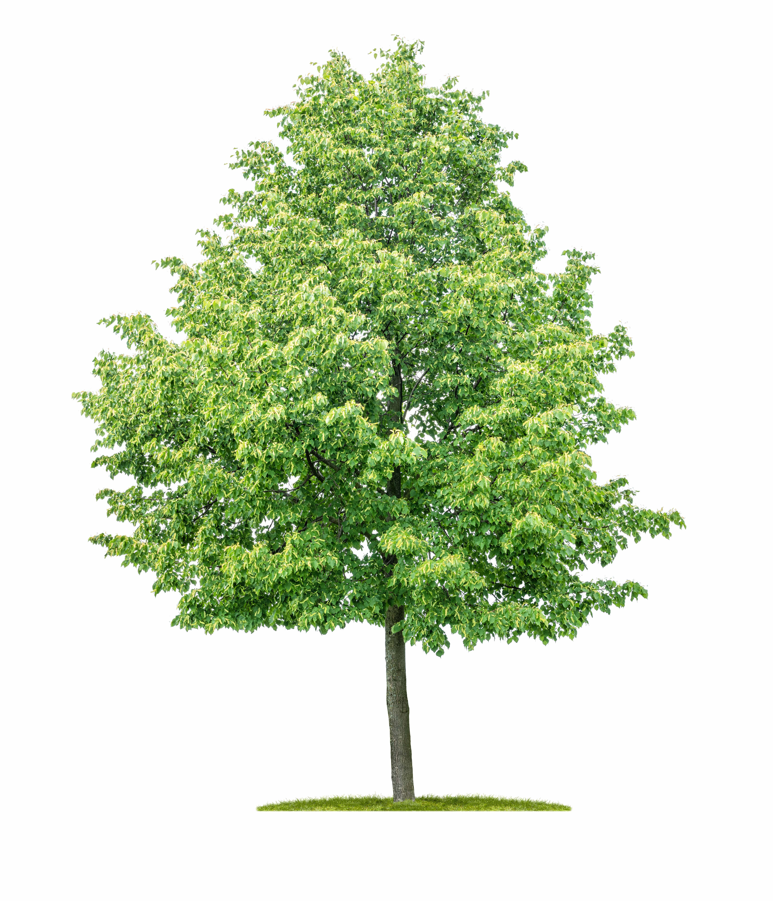

Littleleaf Linden
Tilia cordata

One of the first European trees to be widely planted across American cities due to its charming foliage ability to withstand urban circumstances. An ornamental shade tree, bees frequently visit those that are in full bloom in such large quantities that humming can be heard several feet away from the tree.
- Order: Malvales
- Family: Malvaceae – mallows, mauves
- Genus: Tilia L. – basswood
- Bloom Period: Early Summer
- Foliage Color: Green